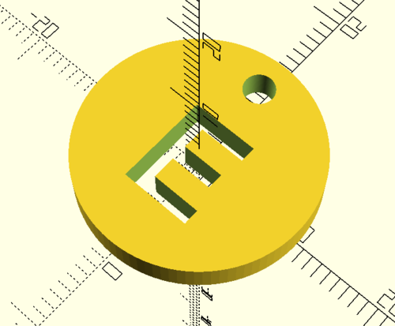

Workshop:Battle-Brushbot Workshop
From 57North Hacklab
| Battle-Brushbot Workshop | |
|---|---|
| Theme | Electronics |
| Status | Active |
| Description | A 1 hour workshop in considered robot design consisting of a kit box of parts and an rough procedure of workshop stages |
| People | User:Nordin |
OpenSCAD code:
//Facet Number
$fn=100;
difference () {
// £1 coin model
translate([0, 0, 0])
cylinder(h = 3.15, r1 = 11.25, r2 = 11.25, center = false);
translate([0, 8, 0])
cylinder(h = 4.15, r1 = 1.5, r2 = 1.5, center = false);
// Letters
scale([1,1,-5])
rotate([0, 0, 0])
translate([-4, -6,-0.8])
linear_extrude(1) text("E", font="Liberation mono:style=Bold");
}
3D Module produced: 